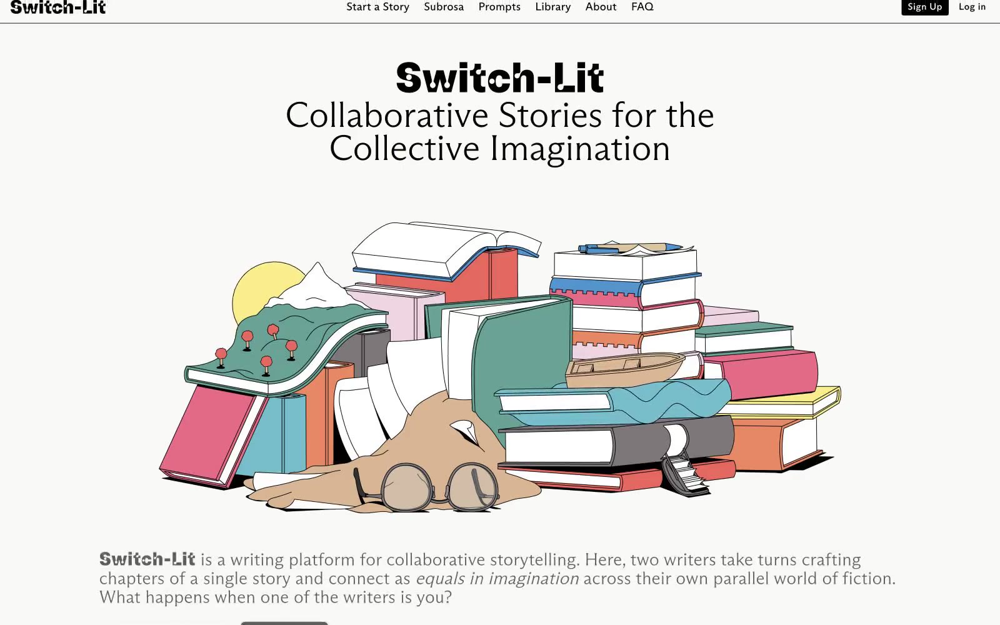

Switch-Lit 的 Design.md 主题展示，围绕内容出版、新闻出版、编辑/机构、浅色界面组织页面。
Explore Switch-Lit's light Media design system: Midnight Ink #000000, Cloud Canvas #f9f9f7 colors, ABCArizonaSans, ABCArizonaSansVariable typography, and...

#f9f9f7: #f9f9f7#000000: #000000#d2ddd2: #d2ddd2#1c1c1c: #1c1c1c#bed4fb: #bed4fb#edfe5e: #edfe5e#c7c7c6: #c7c7c6#dee5dd: #dee5dd#edf0e9: #edf0e9#31e992: #31e992#10b5ff: #10b5ff#f7f0af: #f7f0afdisplay: Interbody: Intermono: ui-monospacehints: Inter,ui-monospace